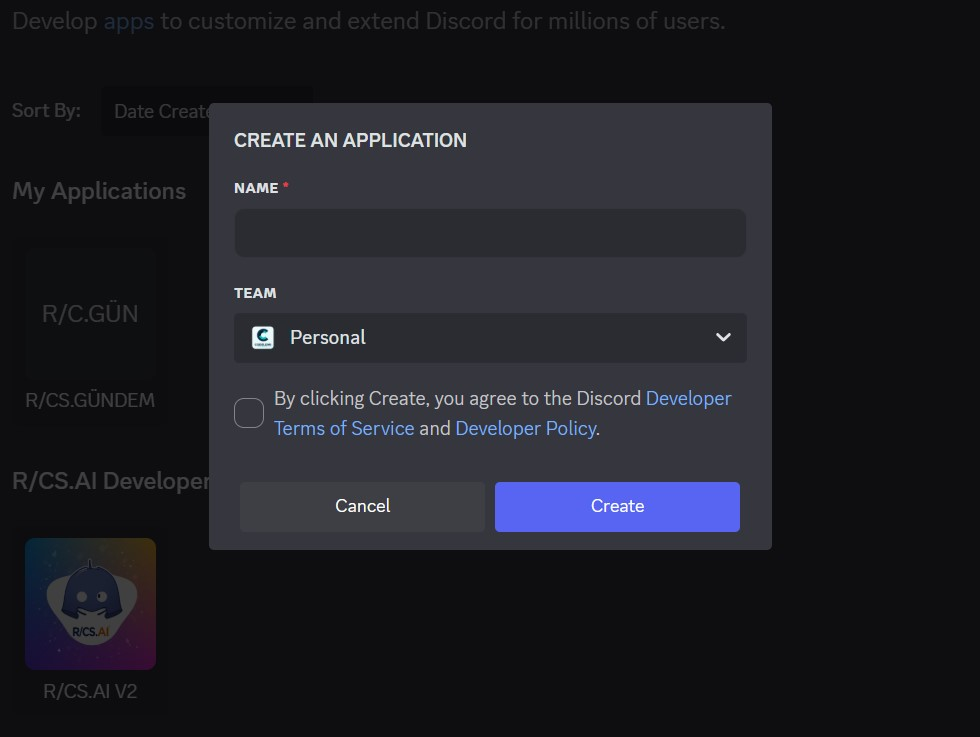
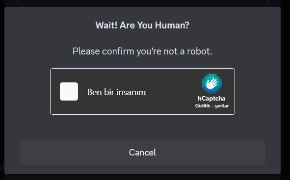
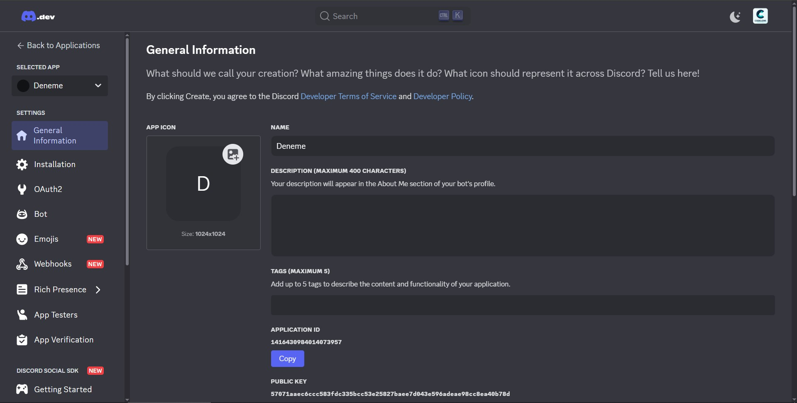
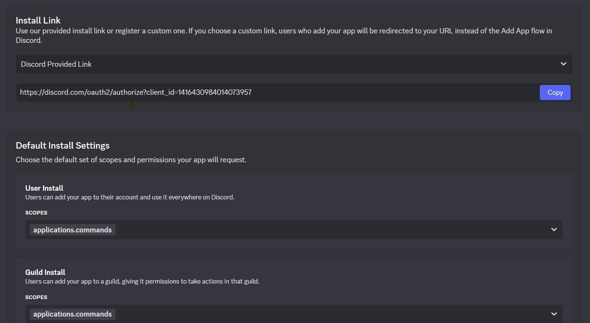
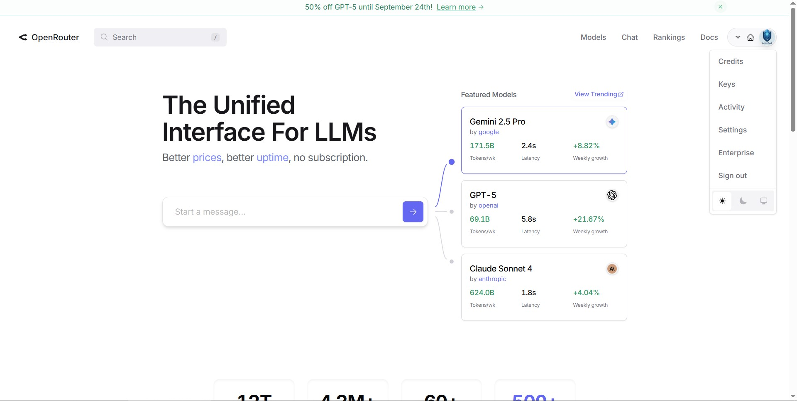
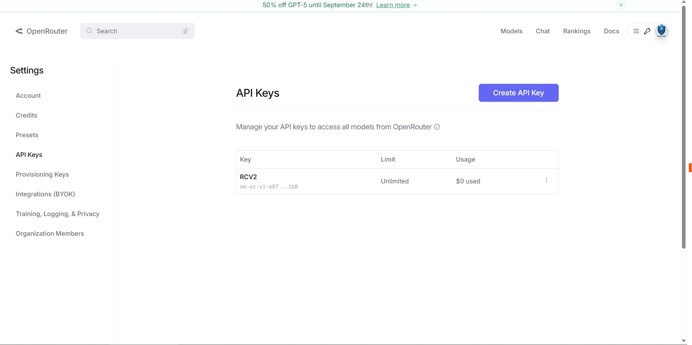

Python Projesi : Yapay Zeka Destekli Discord Botu
Efenim merahabalar;
Bugün sizlere Bir diğer python projemi detaylarını ve nasıl yapıldığını hangi
kütüphanelerin kullanıldığından bahsedeceğim. Başlamadan önce isterseniz size ne işe yaradığını, neden
yapıtğımı, nerden aklıma geldi diye bahsetemek isterim.
Ne İşe Yarıyo
Ben bunu aslında r/cs.core
Discord
Topluluğum için
yaptım hem Karşılama Hemde Vedalaşma için kodladım. Hani örnek olarak şu şekilde
+ Merhabalar
beyler
nasılsınız
-(dbot) Merhabalar efendim nasılsınız
+Sa
-Aleyküm selam [@user] Nasılsın
Gibi diyaloglarda işe yarıyo Ama maalesef halen aktif bir sunucum yok, 7/24 açık tutamıyorum. Bari tek bende
kalacağına millet de faydalansın dedim → GitHub’a attım, sonra da burada paylaşmaya karar verdim.
Neden Yaptım
Şimdi diyeceksiniz ki: “La sen bunu niye yaptın?”
Anlatıyom…
Ben yazılıma yeni başladığım zamanlardı, 1–2 ay olmuş. Arkadaşımın sunucusundaydım. Dedim ki:
“Olm ben bot nasıl yapıcam.”
O da dedi:
“Gel sesliye, anlatırım.”
Ben sanıyorum ki bu Discord’daki bütün botları Discord ekibi yapıyor. Meğer öyle değilmiş. Arkadaş bana
dedi:
“Bak şurdan token alacan, şu ayarı açacan, şunu yapıcan…”
E tabi ben bi şey anlamıyorum. Sonra dedi ki"
“Olm çok kolay lan, git Chat###'ye sor.”
Ben de gittim, sordum, kurcaladım, derken ilk botumu yazdım.
Ne Kadar Sürdü? Ne Sorunlar Çıktı?
Valla çok sürmedi (2 hafta sürdü) ama her adımda kafam karıştı. Mesela botu sunucuya eklemek yetmiyor,
Python üzerinden
token ile çalıştırmak lazımmış. Onu bilmeyip bir gün uğraştım. Sonra hataları çözdüm, derken ortaya bu proje
çıktı.
Dosyalar / Neler gerekli
- bir adet .env dosyası
- Ve bir adet .py dosyası işte
- Discord Developer sitesinde alacağınız token
- OpenRauter kullanıyorum o yüzden bi de onunda tokeni lazım
- Son olarakta proje içinde zaten belli yazmışım (belki, bilmiyom) log kanalı vesaire
Bu kadar işte la çok fazla birşey gerekli değil zaten bu projeyi nasıl yaptığımı anlattıktan sonra en alta
koyarım bağlantısını işte eğer uğraşmak istemiyorusanız zaten uğraşmayın 800 satır kodmu ne işte 2 haftada
anca
bitti "sen bunu kesin tek başına yapıp bitiremedin" diyeceğinizi düşünüyorum evet doğru dediniz tek başıma
yazmadım zaten yapay zeka kullandım hem tabi kullancam o kadar teknoloji gelişsin kullanmayam olmaz öyle şey
kullandım tabi ama bütün projeyi ona yaptırmadım Yani
OpenRouter & Discord Bot Token Alma
Hocam size ilk başta discord developerdan token nasıl alınır onu söylemem lazım başlamadan uyarı geçeyim bu
aldığınız tokeni kimse ile başlamayın hem openrauterın hemmde discord tokeni bu discordda hesabınızın
çalınması olasılığını yüksek tutar openrauter da ise sadece kullanım açısından şey gibi düşünün oprt
(openrauter) sizi mesela tokende 8 dolara kısıtllıyo kulllanım ve soru açısından eğer birisi eline geçirirse
bu oprt tokenini hizluca bitirmiş olacaktıır o yüzden .env dosyasında tutmak hem iyi bi açıdan eğer birisi
sizden botun kodunu isterse (zaten ben bu yazının en sonunda vermiş olucam buraya ynlendirmiş olursunuz)
Bilmeyenler İçin Discord Botu İçin Token Alma
İlk Başta Discord for
Developer'a giriş
yapıyoruz ardından Applications kısmına gelip
"New Applications Diyoruz"

ardından işte
ismini falan
seçiyoruz Team Kısmından Eğer tabi Team ınız varsa seçebilirsiniz yoksa seçmenize gerek yok create
Tıkladıktan sonra robotmusun testi çıkıyoda

(yok robotum hamına), neyse Nerde
kalmıştı işte sonra robot
testini
geçip Karşınıza çıkan bu

sayfada işte isimini açıklamasını falan gösteriyo şimdi ben size gösterebilmek açısıdan Bir bot oluşturdum
Şimdi bir diğer yapmamız gereken şey ise

Bu sayfadaki
Link i
kopyalayıp Discord Topluluğunuza Alabilirsiniz ve böylece daha kodlanmayan bir botunuz vaar hayırlı uğurlu
olsun.
Şimdi ise OpenRauter'dan APİ almanız lazım onuda hemen göstereyim
OpenRauter'a Kayıt / Üye Oluyoruz

Karşınıza bu sayfa geldikten sonra Keys kısmına basıp ardında bu sayfaya yönlendirliyoruz

bu sayfadandada işte yapay zeka için API mizi
alıyoruz. aldıktan sonrada bu sefer .env dosyasına Discord Token + OpenRauter API'sini koyuyoruz. Zaten
proje için Token, API almayı bilmeyenler için büyük çoğunluğunu anlattım artık geri kalanı size kaldı
yapıştırmaktır falan filan zaten botun içinde 'sa' vb. denilince ne söyleyeceğini belli etim list ile
rastgele birşekilde cevap veriyo isterseniz sizde ekleyebilirsiniz listelere zaten belli nereye
ekleyeceğiniz artık size kalmış değiştirmek küfür algılıyo ve timeout atıyo mesela siz timeout attığınızda
kimin attığını neden attığını ve saat kaçta attığnı gösteriyo şimdi sizlere ise ne gibi komutların var
olduğunu anlatcam.
Discord Bot Komutları
- /say Bot Aracılığıyla mesaj gönderir
- /kişisayısı Sununcu istatistiklerini gösterir (Geliştirici rolü gerektirir)
- /sil Belirtilen sayıda mesaj siler
- /rolver Bir kişiye veya herkese rol verir
- /isimceza Kullanıcıya Timeout uygular
- /yz-engel Kullanıcın yapay zeka kulanımı engeller/kaldırır
- /rolgerial Bir kişiden veya herkesten rol alır
- !silinen En son silinen mesajı gösterir
Şuan bir kaç dosya düzenlemesi yapıyorum projeyi size daha iyi sunmak için kısa bir an içinde hem video çekerde koyarım siz merak etmeyin hadi seviliyorsunuz iyi günlerr.İnşAllah okurken eğlenmişsinizdir.